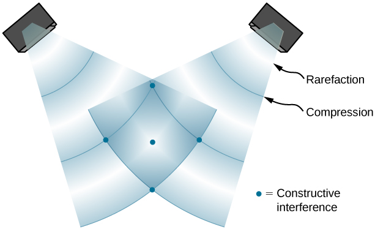
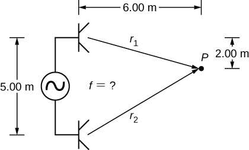
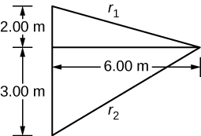
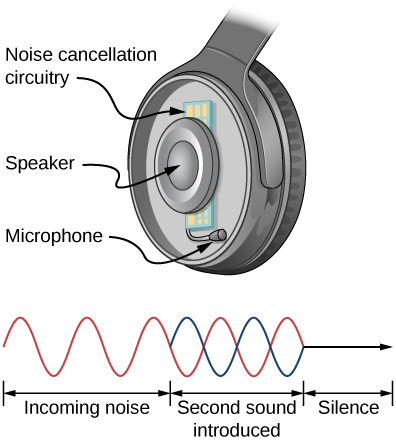
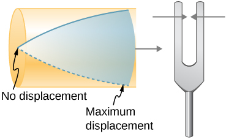
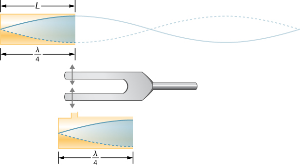
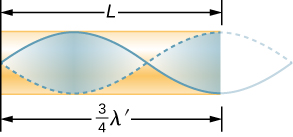
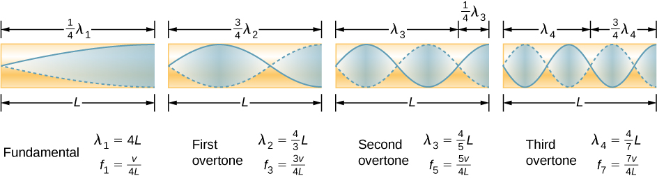
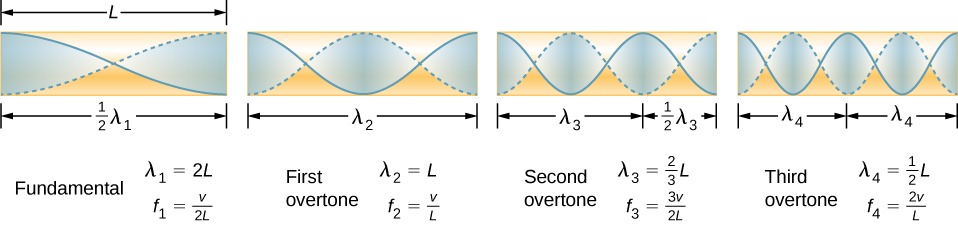

Explain the mechanism behind sound-reducing headphones
Describe resonance in a tube closed at one end and open at the other end
Describe resonance in a tube open at both ends
Interference is the hallmark of waves, all of which exhibit constructive and destructive interference exactly analogous to that seen for water waves. In fact, one way to prove something “is a wave” is to observe interference effects. Since sound is a wave, we expect it to exhibit interference.
Interference of Sound Waves
In Waves, we discussed the interference of wave functions that differ only in a phase shift. We found that the wave function resulting from the superposition of and is
One way for two identical waves that are initially in phase to become out of phase with one another is to have the waves travel different distances; that is, they have different path lengths. Sound waves provide an excellent example of a phase shift due to a path difference. As we have discussed, sound waves can basically be modeled as longitudinal waves, where the molecules of the medium oscillate around an equilibrium position, or as pressure waves.
When the waves leave the speakers, they move out as spherical waves ([link]). The waves interfere; constructive inference is produced by the combination of two crests or two troughs, as shown. Destructive interference is produced by the combination of a trough and a crest.
When sound waves are produced by a speaker, they travel at the speed of sound and move out as spherical waves. Here, two speakers produce the same steady tone (frequency). The result is points of high-intensity sound (highlighted), which result from two crests (compression) or two troughs (rarefaction) overlapping. Destructive interference results from a crest and trough overlapping. The points where there is constructive interference in the figure occur because the two waves are in phase at those points. Points of destructive interference ([link]) are the result of the two waves being out of phase.

Two speakers being driven by a single signal generator. The sound waves produced by the speakers are in phase and are of a single frequency. The sound waves interfere with each other. When two crests or two troughs coincide, there is constructive interference, marked by the red and blue dots. When a trough and a crest coincide, destructive interference occurs, marked by black dots. The phase difference is due to the path lengths traveled by the individual waves. Two identical waves travel two different path lengths to a point P. (a) The difference in the path lengths is one wavelength, resulting in total constructive interference and a resulting amplitude equal to twice the original amplitude. (b) The difference in the path lengths is less than one wavelength but greater than one half a wavelength, resulting in an amplitude greater than zero and less than twice the original amplitude. (c) The difference in the path lengths is one half of a wavelength, resulting in total destructive interference and a resulting amplitude of zero.
The phase difference at each point is due to the different path lengths traveled by each wave. When the difference in the path lengths is an integer multiple of a wavelength,
the waves are in phase and there is constructive interference. When the difference in path lengths is an odd multiple of a half wavelength,
the waves are out of phase and the result is destructive interference. These points can be located with a sound-level intensity meter.
Interference of Sound Waves
Two speakers are separated by 5.00 m and are being driven by a signal generator at an unknown frequency. A student with a sound-level meter walks out 6.00 m and down 2.00 m, and finds the first minimum intensity, as shown below. What is the frequency supplied by the signal generator? Assume the wave speed of sound is

Strategy
The wave velocity is equal to The frequency is then A minimum intensity indicates destructive interference and the first such point occurs where there is path difference of which can be found from the geometry.
Solution
Find the path length to the minimum point from each speaker.

Use the difference in the path length to find the wavelength.
Find the frequency.
Significance
If point P were a point of maximum intensity, then the path length would be an integer multiple of the wavelength.
Check Your Understanding If you walk around two speakers playing music, how come you do not notice places where the music is very loud or very soft, that is, where there is constructive and destructive interference?
In the example, the two speakers were producing sound at a single frequency. Music has various frequencies and wavelengths.
The concept of a phase shift due to a difference in path length is very important. You will use this concept again in Interference and Photons and Matter Waves, where we discuss how Thomas Young used this method in his famous double-slit experiment to provide evidence that light has wavelike properties.
Noise Reduction through Destructive Interference
[link] shows a clever use of sound interference to cancel noise. Larger-scale applications of active noise reduction by destructive interference have been proposed for entire passenger compartments in commercial aircraft. To obtain destructive interference, a fast electronic analysis is performed, and a second sound is introduced out of phase with the original sound, with its maxima and minima exactly reversed from the incoming noise. Sound waves in fluids are pressure waves and are consistent with Pascal’s principle; that is, pressures from two different sources add and subtract like simple numbers. Therefore, positive and negative gauge pressures add to a much smaller pressure, producing a lower-intensity sound. Although completely destructive interference is possible only under the simplest conditions, it is possible to reduce noise levels by 30 dB or more using this technique.
Headphones designed to cancel noise with destructive interference create a sound wave exactly opposite to the incoming sound. These headphones can be more effective than the simple passive attenuation used in most ear protection. Such headphones were used on the record-setting, around-the-world nonstop flight of the Voyager aircraft in 1986 to protect the pilots’ hearing from engine noise.

Check Your Understanding Describe how noise-canceling headphones differ from standard headphones used to block outside sounds.
Regular headphones only block sound waves with a physical barrier. Noise-canceling headphones use destructive interference to reduce the loudness of outside sounds.
Where else can we observe sound interference? All sound resonances, such as in musical instruments, are due to constructive and destructive interference. Only the resonant frequencies interfere constructively to form standing waves, whereas others interfere destructively and are absent.
Resonance in a Tube Closed at one End
As we discussed in Waves, standing waves are formed by two waves moving in opposite directions. When two identical sinusoidal waves move in opposite directions, the waves may be modeled as
When these two waves interfere, the resultant wave is a standing wave:
Resonance can be produced due to the boundary conditions imposed on a wave. In Waves, we showed that resonance could be produced in a string under tension that had symmetrical boundary conditions, specifically, a node at each end. We defined a node as a fixed point where the string did not move. We found that the symmetrical boundary conditions resulted in some frequencies resonating and producing standing waves, while other frequencies interfere destructively. Sound waves can resonate in a hollow tube, and the frequencies of the sound waves that resonate depend on the boundary conditions.
Suppose we have a tube that is closed at one end and open at the other. If we hold a vibrating tuning fork near the open end of the tube, an incident sound wave travels through the tube and reflects off the closed end. The reflected sound has the same frequency and wavelength as the incident sound wave, but is traveling in the opposite direction. At the closed end of the tube, the molecules of air have very little freedom to oscillate, and a node arises. At the open end, the molecules are free to move, and at the right frequency, an antinode occurs. Unlike the symmetrical boundary conditions for the standing waves on the string, the boundary conditions for a tube open at one end and closed at the other end are anti-symmetrical: a node at the closed end and an antinode at the open end.
If the tuning fork has just the right frequency, the air column in the tube resonates loudly, but at most frequencies it vibrates very little. This observation just means that the air column has only certain natural frequencies. Consider the lowest frequency that will cause the tube to resonate, producing a loud sound. There will be a node at the closed end and an antinode at the open end, as shown in [link].
Resonance of air in a tube closed at one end, caused by a tuning fork that vibrates at the lowest frequency that can produce resonance (the fundamental frequency). A node exists at the closed end and an antinode at the open end.

The standing wave formed in the tube has an antinode at the open end and a node at the closed end. The distance from a node to an antinode is one-fourth of a wavelength, and this equals the length of the tube; thus, This same resonance can be produced by a vibration introduced at or near the closed end of the tube ([link]). It is best to consider this a natural vibration of the air column, independently of how it is induced.
The same standing wave is created in the tube by a vibration introduced near its closed end.

Given that maximum air displacements are possible at the open end and none at the closed end, other shorter wavelengths can resonate in the tube, such as the one shown in [link]. Here the standing wave has three-fourths of its wavelength in the tube, or so that Continuing this process reveals a whole series of shorter-wavelength and higher-frequency sounds that resonate in the tube. We use specific terms for the resonances in any system. The lowest resonant frequency is called the fundamental, while all higher resonant frequencies are called overtones. The resonant frequencies that are integral multiples of the fundamental are collectively called harmonics. The fundamental is the first harmonic, the second harmonic is twice the frequency of the first harmonic, and so on. Some of these harmonics may not exist for a given scenario. [link] shows the fundamental and the first three overtones (or the first, third, fifth, and seventh harmonics) in a tube closed at one end.
Another resonance for a tube closed at one end. This standing wave has maximum air displacement at the open end and none at the closed end. The wavelength is shorter, with three-fourths equaling the length of the tube, so that . This higher-frequency vibration is the first overtone.

The fundamental and three lowest overtones for a tube closed at one end. All have maximum air displacements at the open end and none at the closed end.

The relationship for the resonant wavelengths of a tube closed at one end is
Now let us look for a pattern in the resonant frequencies for a simple tube that is closed at one end. The fundamental has and frequency is related to wavelength and the speed of sound as given by
Solving for f in this equation gives
where v is the speed of sound in air. Similarly, the first overtone has (see [link]), so that
Because we call the first overtone the third harmonic. Continuing this process, we see a pattern that can be generalized in a single expression. The resonant frequencies of a tube closed at one end are
where is the fundamental, is the first overtone, and so on. It is interesting that the resonant frequencies depend on the speed of sound and, hence, on temperature. This dependence poses a noticeable problem for organs in old unheated cathedrals, and it is also the reason why musicians commonly bring their wind instruments to room temperature before playing them.
Resonance in a Tube Open at Both Ends
Another source of standing waves is a tube that is open at both ends. In this case, the boundary conditions are symmetrical: an antinode at each end. The resonances of tubes open at both ends can be analyzed in a very similar fashion to those for tubes closed at one end. The air columns in tubes open at both ends have maximum air displacements at both ends ([link]). Standing waves form as shown.
The resonant frequencies of a tube open at both ends, including the fundamental and the first three overtones. In all cases, the maximum air displacements occur at both ends of the tube, giving it different natural frequencies than a tube closed at one end.

The relationship for the resonant wavelengths of a tube open at both ends is
Based on the fact that a tube open at both ends has maximum air displacements at both ends, and using [link] as a guide, we can see that the resonant frequencies of a tube open at both ends are
where is the fundamental, is the first overtone, is the second overtone, and so on. Note that a tube open at both ends has a fundamental frequency twice what it would have if closed at one end. It also has a different spectrum of overtones than a tube closed at one end.
Note that a tube open at both ends has symmetrical boundary conditions, similar to the string fixed at both ends discussed in Waves. The relationships for the wavelengths and frequencies of a stringed instrument are the same as given in [link] and [link]. The speed of the wave on the string (from Waves) is The air around the string vibrates at the same frequency as the string, producing sound of the same frequency. The sound wave moves at the speed of sound and the wavelength can be found using
Check Your Understanding How is it possible to use a standing wave’s node and antinode to determine the length of a closed-end tube?
When the tube resonates at its natural frequency, the wave’s node is located at the closed end of the tube, and the antinode is located at the open end. The length of the tube is equal to one-fourth of the wavelength of this wave. Thus, if we know the wavelength of the wave, we can determine the length of the tube.
Check Your Understanding You observe two musical instruments that you cannot identify. One plays high-pitched sounds and the other plays low-pitched sounds. How could you determine which is which without hearing either of them play?
Compare their sizes. High-pitch instruments are generally smaller than low-pitch instruments because they generate a smaller wavelength.
Summary
Unwanted sound can be reduced using destructive interference.
Sound has the same properties of interference and resonance as defined for all waves.
In air columns, the lowest-frequency resonance is called the fundamental, whereas all higher resonant frequencies are called overtones. Collectively, they are called harmonics.
Conceptual Questions
You are given two wind instruments of identical length. One is open at both ends, whereas the other is closed at one end. Which is able to produce the lowest frequency?
The fundamental wavelength of a tube open at each end is 2L, where the wavelength of a tube open at one end and closed at one end is 4L. The tube open at one end has the lower fundamental frequency, assuming the speed of sound is the same in both tubes.
What is the difference between an overtone and a harmonic? Are all harmonics overtones? Are all overtones harmonics?
Two identical columns, open at both ends, are in separate rooms. In room A, the temperature is and in room B, the temperature is . A speaker is attached to the end of each tube, causing the tubes to resonate at the fundamental frequency. Is the frequency the same for both tubes? Which has the higher frequency?
The wavelength in each is twice the length of the tube. The frequency depends on the wavelength and the speed of the sound waves. The frequency in room B is higher because the speed of sound is higher where the temperature is higher.
Problems
(a) What is the fundamental frequency of a 0.672-m-long tube, open at both ends, on a day when the speed of sound is 344 m/s? (b) What is the frequency of its second harmonic?
What is the length of a tube that has a fundamental frequency of 176 Hz and a first overtone of 352 Hz if the speed of sound is 343 m/s?
0.974 m
The ear canal resonates like a tube closed at one end. (See [link]Figure 17_03_HumEar[/link].) If ear canals range in length from 1.80 to 2.60 cm in an average population, what is the range of fundamental resonant frequencies? Take air temperature to be which is the same as body temperature.
Calculate the first overtone in an ear canal, which resonates like a 2.40-cm-long tube closed at one end, by taking air temperature to be . Is the ear particularly sensitive to such a frequency? (The resonances of the ear canal are complicated by its nonuniform shape, which we shall ignore.)
11.0 kHz; The ear is not particularly sensitive to this frequency, so we don’t hear overtones due to the ear canal.
A crude approximation of voice production is to consider the breathing passages and mouth to be a resonating tube closed at one end. (a) What is the fundamental frequency if the tube is 0.240 m long, by taking air temperature to be ? (b) What would this frequency become if the person replaced the air with helium? Assume the same temperature dependence for helium as for air.
A 4.0-m-long pipe, open at one end and closed at one end, is in a room where the temperature is A speaker capable of producing variable frequencies is placed at the open end and is used to cause the tube to resonate. (a) What is the wavelength and the frequency of the fundamental frequency? (b) What is the frequency and wavelength of the first overtone?
a.
b.
A 4.0-m-long pipe, open at both ends, is placed in a room where the temperature is A speaker capable of producing variable frequencies is placed at the open end and is used to cause the tube to resonate. (a) What are the wavelength and the frequency of the fundamental frequency? (b) What are the frequency and wavelength of the first overtone?
A nylon guitar string is fixed between two lab posts 2.00 m apart. The string has a linear mass density of and is placed under a tension of 160.00 N. The string is placed next to a tube, open at both ends, of length L. The string is plucked and the tube resonates at the mode. The speed of sound is 343 m/s. What is the length of the tube?
A 512-Hz tuning fork is struck and placed next to a tube with a movable piston, creating a tube with a variable length. The piston is slid down the pipe and resonance is reached when the piston is 115.50 cm from the open end. The next resonance is reached when the piston is 82.50 cm from the open end. (a) What is the speed of sound in the tube? (b) How far from the open end will the piston cause the next mode of resonance?
Students in a physics lab are asked to find the length of an air column in a tube closed at one end that has a fundamental frequency of 256 Hz. They hold the tube vertically and fill it with water to the top, then lower the water while a 256-Hz tuning fork is rung and listen for the first resonance. (a) What is the air temperature if the resonance occurs for a length of 0.336 m? (b) At what length will they observe the second resonance (first overtone)?
a. ; b. 1.01 m
Glossary
fundamental
the lowest-frequency resonance
harmonics
the term used to refer collectively to the fundamental and its overtones
overtones
all resonant frequencies higher than the fundamental